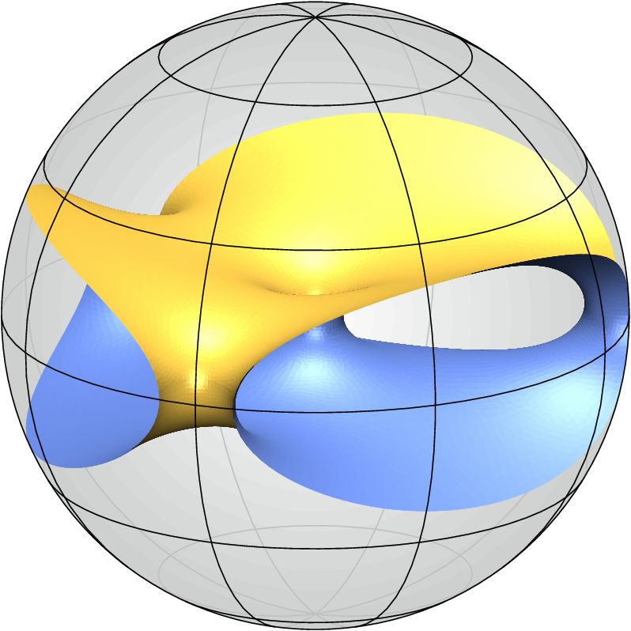
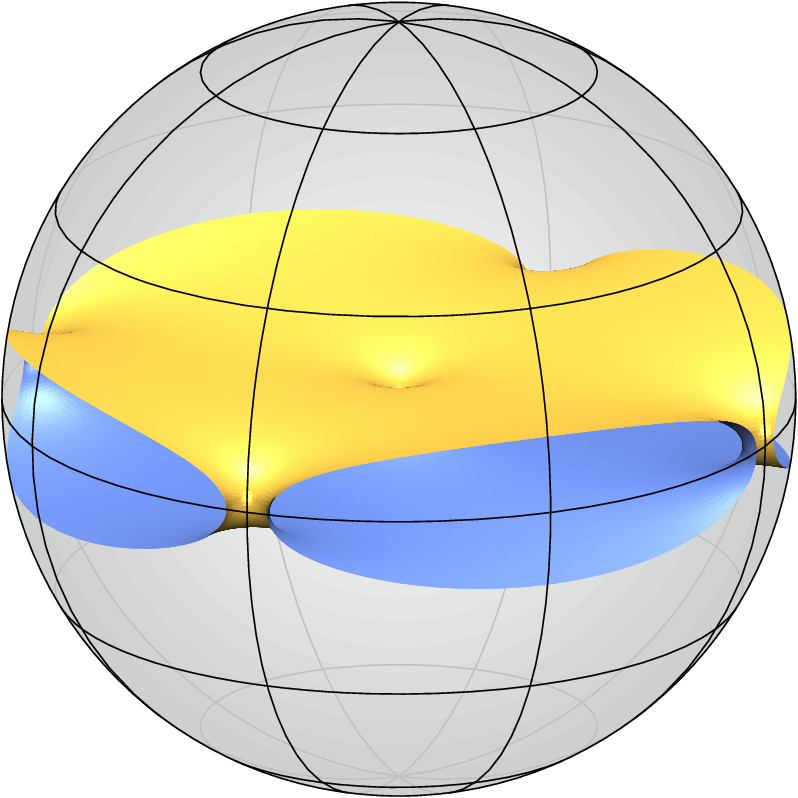
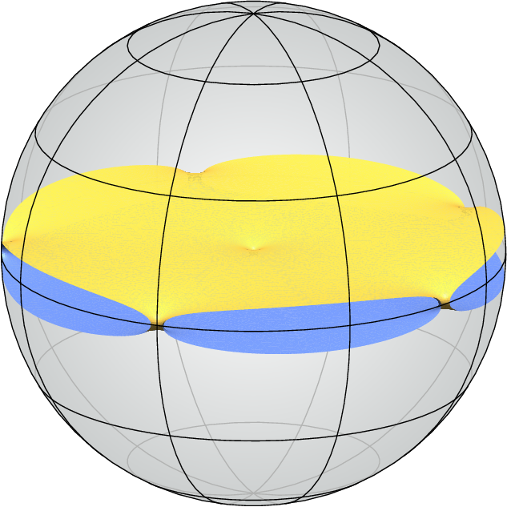

Free boundary minimal surfaces of genus one
Two parallel discs which are very close to the equatorial disc can be connected by a sufficiently large number of half-necks along the equator and by one catenoidal neck in the center and then deformed to a free boundary minimal surface in the unit ball which has genus one and a large number of boundary components. It is an open question whether such surfaces also exist with a small number of boundary components as visualised conjecturally below.

3 boundary components

4 boundary components

5 boundary components
References
- A. Folha, F. Pacard, and T. Zolotareva, Free boundary minimal surfaces in the unit 3-ball, Manuscripta Math. 154 (2017), 359–409.